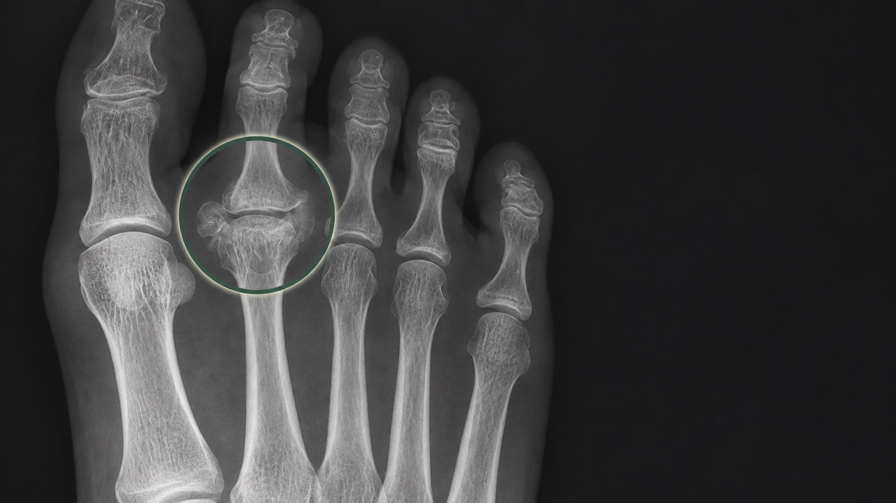

Wat is de ziekte van Freiberg?
De middenvoetsbeentjes eindigen vlak achter de tenen in een afgeronde kop. Samen met de basis van de teen vormt zo'n middenvoetskopje een MTP-gewricht. Bij de ziekte van Freiberg raakt het bot en kraakbeen van een middenvoetskopje beschadigd. In medische teksten wordt ook gesproken over Morbus Freiberg of een Freiberg-infarct.

Het tweede middenvoetskopje is het vaakst aangedaan; het derde komt ook voor. De aandoening is klassiek beschreven bij meisjes en jonge vrouwen, maar kan ook op latere leeftijd en bij mannen worden gezien. De precieze oorzaak is niet altijd vast te stellen. Herhaalde belasting, drukverdeling en verstoring van de bloedvoorziening worden als mogelijke factoren genoemd.
Het ziektebeeld kent verschillende stadia. In een vroege fase kan er vooral irritatie en verandering in het bot onder het kraakbeen zijn. Later kan het middenvoetskopje platter of onregelmatiger worden en kan artrose van het gewricht ontstaan. Niet iedere afwijking op een foto geeft evenveel klachten; het verhaal en lichamelijk onderzoek blijven daarom belangrijk.
Welke klachten kunnen erbij passen?
De pijn zit vaak rond de basis van de tweede of derde teen. Sommige mensen voelen de pijn bovenop het gewricht, anderen juist onder de bal van de voet. Lopen, lang staan, rennen, springen, afzetten of schoenen met weinig ruimte kunnen de klachten versterken. In rust kunnen de klachten afnemen, maar dat patroon is niet specifiek voor Freiberg.
Zwelling rond het gewricht, drukpijn op het middenvoetskopje en minder soepel bewegen van de teen kunnen voorkomen. Soms voelt het gewricht stijf of pijnlijk bij afwikkelen. In een later stadium kan er een krakend gevoel, een bult of beperktere beweging zijn. Deze verschijnselen kunnen ook bij andere gewrichtsproblemen voorkomen.
Freiberg is daarmee een mogelijke specifieke oorzaak van pijn onder de bal van de voet, maar niet iedere metatarsalgie is Freiberg. De locatie alleen is onvoldoende om de diagnose te stellen.
Wat kan erop lijken?
Pijn rond de basis van een kleine teen kan ook passen bij irritatie van het gewrichtskapsel, plantaire plaatklachten, artrose, ontsteking of jicht. Bij plantaire plaatklachten kunnen instabiliteit en een geleidelijk veranderende teenstand meer op de voorgrond staan.
Een stressreactie of stressfractuur kan eveneens lokale botpijn en zwelling geven, maar zit niet altijd in het gewrichtsoppervlak van het middenvoetskopje. Bij een Morton neuroom staan brandende pijn, tinteling of uitstraling naar tenen vaker op de voorgrond. Ook huiddruk, eelt, een hamerteen, hallux valgus, ontstekingsreuma of klachten na een eerdere operatie kunnen een vergelijkbaar pijngebied geven.
Ziekte van Freiberg
Lokale pijn en soms stijfheid rond een middenvoetskopje, met passende afwijkingen op beeldvorming.
Plantaire plaat
Pijn rond de teenbasis, soms met zwelling, instabiliteit of een veranderende teenstand.
Metatarsalgie
Pijn onder de bal van de voet is een beschrijving van de plek; de oorzaak moet apart worden beoordeeld.
Onderzoek en diagnose
De beoordeling begint met het ontstaan en verloop van de klachten. Leeftijd, sport, verandering van belasting, schoenen, een ongeval, eerdere voetproblemen en de exacte pijnplek geven richting. Bij lichamelijk onderzoek wordt gekeken naar zwelling, drukpijn, eelt, teenstand, beweeglijkheid van het gewricht aan de basis van de teen en pijn bij lopen of afwikkelen.
Belaste röntgenfoto's van de voet zijn belangrijk bij verdenking op Freiberg. In een vroege fase kan een röntgenfoto nog weinig laten zien. Later kunnen afplatting, verdichting, onregelmatigheid of fragmentatie van het middenvoetskopje en artrose van het gewricht zichtbaar worden. De ernst op de foto hoeft niet één op één overeen te komen met de ervaren pijn.
MRI kan in geselecteerde situaties helpen wanneer de klachten en gewone foto's nog geen duidelijke verklaring geven, of wanneer onderscheid nodig is met een andere aandoening.
De behandeling
De behandeling hangt af van leeftijd, duur van de klachten, stadium van de aandoening, belasting, beweeglijkheid en de vorm van het gewricht. Meestal wordt eerst geprobeerd de druk op het aangedane middenvoetskopje te verminderen. Dat geeft het gewricht rust en kan klachten beperken, maar het effect verschilt per situatie.
Tijdelijk minder rennen, springen of langdurig staan kan de pijnlijke voorvoet ontlasten.
Voldoende ruimte, een stijvere of afwikkelende zool en gerichte drukontlasting kunnen worden besproken.
Bij duidelijke pijn kan tijdelijk een stevige schoen, brace of andere vorm van ontlasting worden overwogen.
Pijnstilling of ontstekingsremming kan soms ook goed helpen. Een injectie herstelt de vorm van het middenvoetskopje niet en is geen standaardoplossing voor de aandoening.
Wanneer specialistische beoordeling relevant kan zijn
Specialistische beoordeling kan passend zijn bij aanhoudende lokale pijn, toenemende stijfheid, duidelijke afwijkingen op röntgenfoto's of onvoldoende verbetering na passende drukontlasting. Ook twijfel tussen Freiberg, stressletsel, plantaire plaatklachten en andere oorzaken kan reden zijn om de voorvoet gerichter te beoordelen.
Een operatie is bij de ziekte van Freiberg maar zelden nodig. Pas wanneer pijn en beperkingen blijven bestaan ondanks een langere periode van drukontlasting en andere niet-operatieve behandeling, kan een operatie worden besproken. Het doel is meestal om het gewricht zo veel mogelijk te behouden. Afhankelijk van de vorm en het stadium kunnen losse of beschadigde delen worden verwijderd, of kan een standscorrectie van het middenvoetsbeentje de belasting naar een beter deel van het gewricht verplaatsen. Bij uitgebreide gewrichtsschade bestaan andere reconstructieve mogelijkheden. Er is geen standaardoperatie omschreven voor de behandeling van de ziekte van Freiberg.
Waar kan je terecht?
Bij nieuwe of niet-acute voorvoetklachten is de huisarts meestal het eerste aanspreekpunt. Afhankelijk van de bevindingen kunnen podotherapie, fysiotherapie, schoentechnische zorg of een verwijzing naar een orthopedisch chirurg een rol spelen. Persoonlijke beoordeling en verwijzing lopen via de gebruikelijke zorgroute.
Als specialistische beoordeling passend is, kan de verwijzer gericht naar mij verwijzen via de gebruikelijke zorgkanalen. Voor afspraken, planning, uitslagen en praktische ziekenhuisinformatie zijn de officiële ETZ-kanalen leidend.
Veelgestelde vragen
Wat is de ziekte van Freiberg?
Bij de ziekte van Freiberg raakt het bot en kraakbeen van een middenvoetskopje beschadigd. Meestal gaat het om het tweede en soms om het derde middenvoetsbeentje.
Waar zit de pijn bij Freiberg meestal?
De pijn zit vaak rond de basis van de tweede of derde teen. Dat kan bovenop het gewricht zijn, maar ook onder de bal van de voet. De pijnplek alleen is onvoldoende om de diagnose te stellen.
Is Freiberg hetzelfde als metatarsalgie?
Nee. Metatarsalgie beschrijft pijn onder de bal van de voet. De ziekte van Freiberg is een specifieke aandoening van een middenvoetskopje en kan een oorzaak van voorvoetpijn zijn.
Is Freiberg altijd direct zichtbaar op een röntgenfoto?
Nee. In een vroege fase kan een röntgenfoto nog weinig afwijkingen laten zien. Bij aanhoudende verdenking kan aanvullende beeldvorming worden overwogen, afhankelijk van het onderzoek.
Wat wordt meestal eerst geprobeerd bij Freiberg?
Vaak wordt eerst geprobeerd de belasting en druk op het pijnlijke middenvoetskopje te verminderen. Schoenaanpassing, een stijvere of afwikkelende zool en gerichte drukontlasting kunnen daarbij worden besproken.
Wanneer komt een operatie bij Freiberg in beeld?
Een operatie wordt alleen in geselecteerde situaties besproken, bijvoorbeeld bij blijvende pijn en beperkingen ondanks passende niet-operatieve zorg. De mogelijkheden hangen af van het stadium en de vorm van het gewricht.
Bronnen: Evidence-Based Treatment Algorithm for Freiberg Disease, Freiberg's infraction: diagnosis and treatment en Surgical interventions of Freiberg's disease: A systematic review.